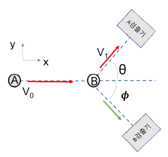

문제 3
그림과 같이 질량이 m으로서 서로 같은 두 입자 A, B가 충돌하는 상황을 고려하자. 충돌 전에 입자 B는 정지해 있었고, 입자 A는 +x 방향으로 속력 \(V_0\)의 등속도 운동을 하고 있었다. 두 입자는 서로 충돌한 후 각각 xy 평면 위에서 등속도 운동을 하게 되었는데, 입자 A는 A검출기를 통하여 입사 방향으로부터 각도 \(\theta\)인 방향에서 속력 \(V_1\)을 갖는다고 관측되었다. 두 검출기에서 속력 측정 외의 다른 효과는 무시할 수 있다.

(1) (2점) 입자 B를 관측하기 위해서는 B검출기를 어느 각도 \(\phi\)에 놓아야 하는가? 질량 m이 커짐에 따라, 각도 \(\phi\)가 커지는지 작아지는지 아니면 변하지 않는지 답하라.
(2) (3점) 충돌 후 \(\theta = 30°\)에 놓인 A검출기에서 \(V_1 = V_0/\sqrt{3}\)가 측정되었고, 두 입자의 온도가 \(\Delta T\)만큼 증가한 것이 확인되었다. 부피 등 다른 물리량은 변하지 않았을 때 두 입자로 이루어진 시스템의 비열을 구하라.